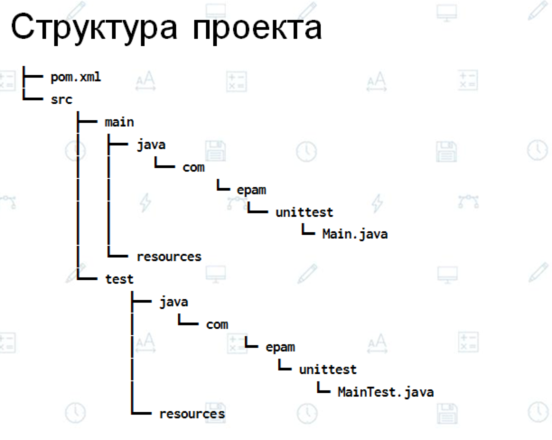

Файл pom.xml
<project xmlns="http://maven.apache.org/POM/4.0.0"
xmlns:xsi="http://www.w3.org/2001/XMLSchema-instance"
xsi:schemaLocation="http://maven.apache.org/POM/4.0.0 http://maven.apache.org/xsd/maven-4.0.0.xsd">
<modelVersion>4.0.0</modelVersion>
<groupId>com.epam</groupId> идентификатор группы
<artifactId>unit-test-sample</artifactId> идентификатор артефакта. Артефакт - результат сборки текущего приложения
<version>1.0-SNAPSHOT</version> версия (соблюдаем семантическое версионирование). SNAPSHOT - версия в активной разработке
<packaging>jar</packaging> упаковка
<name>Maven jUnit sample</name> имя
<properties> настройки, которые нужны в пределах этого конфигурационного файла
<project.build.sourceEncoding>UTF-8</project.build.sourceEncoding>
<maven.compiler.source>17</maven.compiler.source> версия исходных файлов java
<maven.compiler.target>17</maven.compiler.target> версия результирующих файлов java
</properties>
<dependencies> зависимости в пределах этого текущего артефакта
<dependency>
<groupId>junit</groupId>
<artifactId>junit</artifactId>
<version>4.8.2</version>
<scope>test</scope> область видимости: эта зависимость видна только для теста
</dependency>
</dependencies>
</project>
Главный класс зпауска - Прописать <manifest>......<mainclass>...........
<repositories> <repository> <id> <url> ..... - сюда будет деплоиться наш проект
<scm> <connection> ...... <developerConnection> ...... - ссылка на исходники
<issueManagemebt> <system> ...... <url> ....... - где хранится Jira, либо в GitHub могут быть тикеты
<mailingLists> <mailingList> <name> .... <subscribe> ..... <post> ...... <archive> ..... - какие разработчики могут участвовать
Область действия зависимости scope
Область действия зависимости scope определяет этап жизненного цикла проекта, в котором эта зависимость будет использоваться.
Maven использует 6 областей :
● compile - область по умолчанию, используется, если scope не определена. Compile зависимости доступны во всех classpath проекта;
● provided - очень похоже на compile, но эта зависимость в сборку не попадает. Предполагается, что зависимость (артефакт) уже присутствует в JDK или в WEB-контейнере. Эта область доступна только на этапах компиляции и тестирования и не является транзитивной;
● runtime - зависимость с данной областью видимости не обязательна для compilation и используется в фазе выполнения;
● test - зависимость используется при тестировании кода приложения;
● system - область похожа на provided за исключением того, что необходимо определить физическое расположение артефакта на диске. Артефакт с этой областью видимости maven не ищет в репозитории;
● import - эта область используется в зависимости секции <dependencyManagement> при сложных связях (см. dependencyManagement).

Команды Maven (Terminal IDEA):
mvn help:effective-pom
mvn package
mvn clean install
.....
Иерархия от простого к сложному:
- функции
- классы (функции объединяются в классы)
- пакеты
- модули (модули являются как библиотеки)
- сервисы
Горизонтальное масштабирование - приложение запускается в нескольких экземплярах. Добавление компьютеров, ра каждом из которых будет работать один экземпляр приложения. + еще один компьютер, который будет балансировать нагрузку между этими компьютерами.
Вертикальная масштабирование - (если приложение не справляется: добавление памяти, жестких дисков, замена/добавление процессоров, замена материнской платы).
Локальный репозиторий Maven:
C:\Users\Текущий пользователь\.m2\repository
Настройки Maven (Settings files):
C:\Program Files\JetBrains\IntelliJ IDEA Community Edition 2021.2.3\plugins\maven\lib\maven3\conf\settings.xml
C:\Users\Текущий пользователь\.m2\repository - находится в репозитории профиля пользователя. По умолчанию файла здесь нет. Если что-то поменять, он появится. Этот файл можно добавить самим. Сюда придется добавлять настройки проектных репозиториев. Эти настройки переопределяют настройки, которые находятся здесь:
“C:\Program Files\JetBrains\IntelliJ IDEA Community Edition 2021.2.3\plugins\maven\lib\maven3\conf\settings.xml”
Внешние зависимости
Эти зависимости можем положить радом с проектом, тогда наш проект не будет зависеть от интернета.
Lifecycle maven
clean - очищает папки target, в которые были помещены файлы во время build
validate - проверяет все ли java файлы в порядке, проверяет зависимости
compile - компилирует java код в class файлы
test - запускает unit-тесты
package - пакует jar файлы
verify - запускает дополнительные проверки jar или war файлов, в зависимости от того подключены эти проверки или нет
install - помещает jar файлы в локальный репозиторий Maven
site - генерирует документацию (запускает java doc) (комментарии к методам)
deploy - заливает проект на удаленный репозиторий